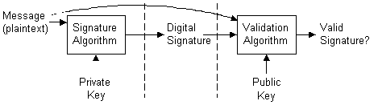
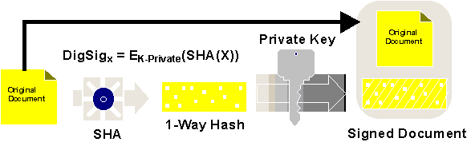

|
| ||
|
| ||
Microsoft Corporation
September 10, 1996
Digital signatures can be used when you have a message that you plan to distribute in plaintext form, and you want the recipients to be able to verify that the message comes from you and that it hasn't been tampered with since it left your hands. Signing a message does not alter the message, it simply generates a digital signature string you can bundle with the message or transmit separately.
Digital signatures are generated using public-key signature algorithms. A private key is used to generate the signature, and the corresponding public key is used to validate the signature. This process is shown in the following illustration:

Figure 2. Signature generation/validation process
Digital signatures provide benefits separate from encryption. They allow users to verify that a document came from the holder of a private key, and hasn't changed since signature. The document may or may not be encrypted in addition to being signed. (Note: good cryptographic procedure is always to sign before encrypting - that way you know what's being signed. Imagine signing an envelope without knowing what's inside!).
Digital signatures are created by encrypting a hash of the document with a private key. The hash of the document is essentially a miniature fingerprint of the document. The hashing functions used are similar to the hashing functions in use throughout computer science - functions which take a large data input and return a smaller output of fixed size - with a few key distinctions. They should be as "one- way" as possible: if you know the value of a hash (and potentially the original document), it should be very difficult to create another document with the same hash value. It should be especially difficult (ideally impossible) to modify the original document by a character here or there and obtain the same hash value.
A digital signature is hash encrypted with a private signature key. Verifying a digital signature is done by decrypting the signature using the public signature key, and matching the result against a hash of the original document. (Note: good cryptographic procedure recommends using a different key specifically for signature, rather than a general purpose key for both encryption or key exchange and signature.)
The strength of a signature is dependent on the quality of the one-way hash function, and the strength of the encryption of that hash. If the one-way hash function can be subverted, than the original document might be changed. If the encryption isn't sufficiently strong, then the document might have come from someone other than the holder of the private key.

Figure 3. Hashing and signature
So far, we are able to encrypt and decrypt documents, and sign and verify their signatures. Both of these functions require our ability to distribute public keys and match them to the holder of the private key.
This raises the question - how does someone know that an arbitrary public key belongs to someone. If you received a public key and were told that this was the public key for your bank, would you believe it? One very appropriate answer to this question might be "Who told me?"
|
|
Did you find this material useful? Gripes? Compliments? Suggestions for other articles? Write us!
© 1999 Microsoft Corporation. All rights reserved. Terms of use.